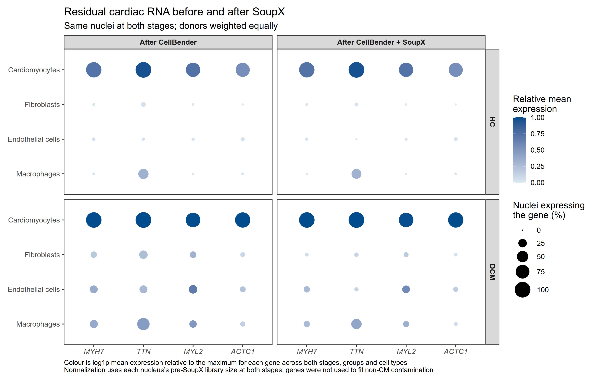
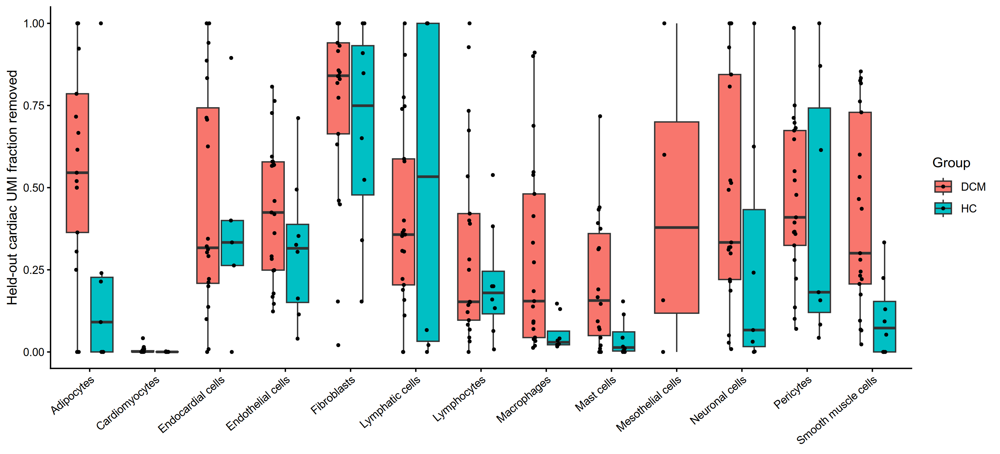

Last updated: 2026-11-18
Checks: 7 0
Knit directory: project/
This reproducible R Markdown analysis was created with workflowr (version 1.7.2). The Checks tab describes the reproducibility checks that were applied when the results were created. The Past versions tab lists the development history.
Great! Since the R Markdown file has been committed to the Git repository, you know the exact version of the code that produced these results.
Great job! The global environment was empty. Objects defined in the global environment can affect the analysis in your R Markdown file in unknown ways. For reproduciblity it’s best to always run the code in an empty environment.
The command set.seed(20240606) was run prior to running
the code in the R Markdown file. Setting a seed ensures that any results
that rely on randomness, e.g. subsampling or permutations, are
reproducible.
Great job! Recording the operating system, R version, and package versions is critical for reproducibility.
Nice! There were no cached chunks for this analysis, so you can be confident that you successfully produced the results during this run.
Great job! Using relative paths to the files within your workflowr project makes it easier to run your code on other machines.
Great! You are using Git for version control. Tracking code development and connecting the code version to the results is critical for reproducibility.
The results in this page were generated with repository version 9a47f63. See the Past versions tab to see a history of the changes made to the R Markdown and HTML files.
Note that you need to be careful to ensure that all relevant files for
the analysis have been committed to Git prior to generating the results
(you can use wflow_publish or
wflow_git_commit). workflowr only checks the R Markdown
file, but you know if there are other scripts or data files that it
depends on. Below is the status of the Git repository when the results
were generated:
Ignored files:
Ignored: analysis/figure/
Ignored: logs/
Untracked files:
Untracked: data/Baza_dla_Gino_AP.xlsx
Untracked: data/Baza_dla_Gino_AP_2.xlsx
Untracked: data/Baza_dla_Gino_AP_short.xlsx
Untracked: data/Cellbender_output
Untracked: data/Cellranger_output
Untracked: data/DCM_Clinical_data_22.xlsx
Untracked: data/DCM_Clinical_data_26.xlsx
Untracked: data/DCM_Clinical_data_30.xlsx
Untracked: data/DCM_Clinical_data_30_261012.xlsx
Untracked: data/DCM_Clinical_data_83.xlsx
Untracked: data/HMEC_RNAseq
Untracked: data/Heart_datasets
Untracked: data/Heart_specific_proteome.xlsx
Untracked: data/Homo_sapiens.GRCh38.93.gtf
Untracked: data/Human_plasma_proteome.xlsx
Untracked: data/Mass_spec
Untracked: data/Massons_quantification.xlsx
Untracked: data/OLINK
Untracked: data/OLINK_LVAD
Untracked: data/Published_datasets
Untracked: data/Raw
Untracked: data/SSc-PAH
Untracked: data/gencode.v46.chr_patch_hapl_scaff.annotation.gtf
Untracked: data/gencode.v46.chr_patch_hapl_scaff.basic.annotation.gtf
Untracked: data/processed/CM/activities.qs2
Untracked: data/processed/CM/annotated.qs2
Untracked: data/processed/CM/baseline.qs2
Untracked: data/processed/EC/activities.qs2
Untracked: data/processed/EC/annotated.qs2
Untracked: data/processed/EC/baseline.qs2
Untracked: data/processed/FB/activities.qs2
Untracked: data/processed/FB/annotated.qs2
Untracked: data/processed/FB/baseline.qs2
Untracked: data/processed/LC/PC10.qs2
Untracked: data/processed/LC/PC20.qs2
Untracked: data/processed/LC/PC30.qs2
Untracked: data/processed/LC/activities.qs2
Untracked: data/processed/LC/annotated.qs2
Untracked: data/processed/LC/baseline.qs2
Untracked: data/processed/MC/activities.qs2
Untracked: data/processed/MC/annotated.qs2
Untracked: data/processed/MC/baseline.qs2
Untracked: data/processed/MP/PC10.qs2
Untracked: data/processed/MP/PC20.qs2
Untracked: data/processed/MP/PC30.qs2
Untracked: data/processed/MP/activities.qs2
Untracked: data/processed/MP/annotated.qs2
Untracked: data/processed/MP/baseline.qs2
Untracked: data/processed/MultinicheNet.qs2
Untracked: data/processed/QC/annotated.qs2
Untracked: data/processed/QC/annotated_RNA.qs2
Untracked: data/processed/QC/doublet_metadata.csv
Untracked: data/processed/QC/final_integrated.qs2
Untracked: data/processed/QC/initial_integrated.qs2
Untracked: data/processed/QC/not_integrated.qs2
Untracked: data/processed/QC/preQC.qs2
Untracked: data/processed/RNA_quality_control.qs2
Untracked: data/processed/RV_cell_states_RNA.qs2
Untracked: data/processed/SoupX/A_SoupX_input_CZD13.qs2
Untracked: data/processed/SoupX/A_SoupX_input_CZD15.qs2
Untracked: data/processed/SoupX/A_SoupX_input_CZD16.qs2
Untracked: data/processed/SoupX/A_SoupX_input_CZD4.qs2
Untracked: data/processed/SoupX/A_SoupX_input_CZD5.qs2
Untracked: data/processed/SoupX/A_SoupX_input_CZD6.qs2
Untracked: data/processed/SoupX/A_SoupX_input_CZD7.qs2
Untracked: data/processed/SoupX/A_SoupX_input_CZD9.qs2
Untracked: data/processed/SoupX/A_SoupX_input_P3.qs2
Untracked: data/processed/SoupX/A_SoupX_input_P5.qs2
Untracked: data/processed/SoupX/A_SoupX_input_P8.qs2
Untracked: data/processed/SoupX/A_SoupX_input_PK153.qs2
Untracked: data/processed/SoupX/A_SoupX_input_PK213.qs2
Untracked: data/processed/SoupX/A_SoupX_input_PK229.qs2
Untracked: data/processed/SoupX/A_SoupX_input_PK323.qs2
Untracked: data/processed/SoupX/A_SoupX_input_PK337.qs2
Untracked: data/processed/SoupX/A_SoupX_input_PK345.qs2
Untracked: data/processed/SoupX/A_SoupX_input_PK357.qs2
Untracked: data/processed/SoupX/A_SoupX_input_PK369.qs2
Untracked: data/processed/SoupX/A_SoupX_input_PK375.qs2
Untracked: data/processed/SoupX/A_SoupX_input_PK385.qs2
Untracked: data/processed/SoupX/A_SoupX_input_PK401.qs2
Untracked: data/processed/SoupX/A_SoupX_input_PK403.qs2
Untracked: data/processed/SoupX/A_SoupX_input_PK415.qs2
Untracked: data/processed/SoupX/A_SoupX_input_PK437.qs2
Untracked: data/processed/SoupX/A_SoupX_input_PK439.qs2
Untracked: data/processed/SoupX/A_SoupX_input_PK441.qs2
Untracked: data/processed/SoupX/A_SoupX_input_PK461.qs2
Untracked: data/processed/SoupX/A_SoupX_input_PK463.qs2
Untracked: data/processed/SoupX/A_fresh_ambient_profile_CZD13.qs2
Untracked: data/processed/SoupX/A_fresh_ambient_profile_CZD15.qs2
Untracked: data/processed/SoupX/A_fresh_ambient_profile_CZD16.qs2
Untracked: data/processed/SoupX/A_fresh_ambient_profile_CZD4.qs2
Untracked: data/processed/SoupX/A_fresh_ambient_profile_CZD5.qs2
Untracked: data/processed/SoupX/A_fresh_ambient_profile_CZD6.qs2
Untracked: data/processed/SoupX/A_fresh_ambient_profile_CZD7.qs2
Untracked: data/processed/SoupX/A_fresh_ambient_profile_CZD9.qs2
Untracked: data/processed/SoupX/A_fresh_ambient_profile_P3.qs2
Untracked: data/processed/SoupX/A_fresh_ambient_profile_P5.qs2
Untracked: data/processed/SoupX/A_fresh_ambient_profile_P8.qs2
Untracked: data/processed/SoupX/A_fresh_ambient_profile_PK153.qs2
Untracked: data/processed/SoupX/A_fresh_ambient_profile_PK213.qs2
Untracked: data/processed/SoupX/A_fresh_ambient_profile_PK229.qs2
Untracked: data/processed/SoupX/A_fresh_ambient_profile_PK323.qs2
Untracked: data/processed/SoupX/A_fresh_ambient_profile_PK337.qs2
Untracked: data/processed/SoupX/A_fresh_ambient_profile_PK345.qs2
Untracked: data/processed/SoupX/A_fresh_ambient_profile_PK357.qs2
Untracked: data/processed/SoupX/A_fresh_ambient_profile_PK369.qs2
Untracked: data/processed/SoupX/A_fresh_ambient_profile_PK375.qs2
Untracked: data/processed/SoupX/A_fresh_ambient_profile_PK385.qs2
Untracked: data/processed/SoupX/A_fresh_ambient_profile_PK401.qs2
Untracked: data/processed/SoupX/A_fresh_ambient_profile_PK403.qs2
Untracked: data/processed/SoupX/A_fresh_ambient_profile_PK415.qs2
Untracked: data/processed/SoupX/A_fresh_ambient_profile_PK437.qs2
Untracked: data/processed/SoupX/A_fresh_ambient_profile_PK439.qs2
Untracked: data/processed/SoupX/A_fresh_ambient_profile_PK441.qs2
Untracked: data/processed/SoupX/A_fresh_ambient_profile_PK461.qs2
Untracked: data/processed/SoupX/A_fresh_ambient_profile_PK463.qs2
Untracked: data/processed/mPAP/CM_GSEA_Reactome_mPAP.rds
Untracked: data/processed/mPAP/CM_ORA_REACTOME_mPAP_down.rds
Untracked: data/processed/mPAP/CM_ORA_REACTOME_mPAP_up.rds
Untracked: data/processed/mPAP/CM_activities.qs2
Untracked: data/processed/resources/A_activity_API_compatibility.json
Untracked: data/processed/resources/A_activity_network_manifest.json
Untracked: data/processed/resources/A_final_resource_manifest.json
Untracked: data/processed/resources/A_ligand_target_matrix_nsga2r_final.rds
Untracked: data/processed/resources/A_resources_sessionInfo.txt
Untracked: data/processed/resources/A_submitted_programme_provenance.json
Untracked: data/refdata-gex-GRCh38-2020-A
Untracked: omnipathr-log/
Untracked: output/Ambient_RNA_correction/
Untracked: output/Cardiomyocytes_cell_states/
Untracked: output/Cell_communication/
Untracked: output/Cell_state_annotation/
Untracked: output/Clinical_transcriptomic_associations/
Untracked: output/DCM_control_transcriptomics/
Untracked: output/Datasets/
Untracked: output/Endothelial_cells_cell_states/
Untracked: output/Fibroblasts_cell_states/
Untracked: output/Fibrosis_associations/
Untracked: output/Integrative_analysis/
Untracked: output/Lymphocytes_cell_states/
Untracked: output/Macrophages_cell_states/
Untracked: output/Mural_cells_cell_states/
Untracked: output/Protein_differential_abundance/
Untracked: output/Protein_quality_control/
Untracked: output/Pulmonary_pressure_associations/
Untracked: output/QC_integration/
Untracked: output/Transcriptional_signatures/
Untracked: output/Transcriptomic_variation/
Unstaged changes:
Deleted: output/README.md
Note that any generated files, e.g. HTML, png, CSS, etc., are not included in this status report because it is ok for generated content to have uncommitted changes.
These are the previous versions of the repository in which changes were
made to the R Markdown
(analysis/Ambient_RNA_correction.Rmd) and HTML
(docs/Ambient_RNA_correction.html) files. If you’ve
configured a remote Git repository (see ?wflow_git_remote),
click on the hyperlinks in the table below to view the files as they
were in that past version.
| File | Version | Author | Date | Message |
|---|---|---|---|---|
| Rmd | 9a47f63 | GinoBonazza | 2026-11-18 | Add HC-inclusive analysis scripts and frozen reproducibility inputs |
| html | 9a47f63 | GinoBonazza | 2026-11-18 | Add HC-inclusive analysis scripts and frozen reproducibility inputs |
| Rmd | d136073 | GinoBonazza | 2026-10-19 | MXRA5 coexpression analysis |
| html | d136073 | GinoBonazza | 2026-10-19 | MXRA5 coexpression analysis |
knitr::opts_chunk$set(warning = FALSE, message = FALSE, error = FALSE, cache = FALSE, echo = TRUE, dpi = 300, fig.retina = 1,
fig.align = "center", dev = "png", dev.args = list(type = "cairo", family = "Arial"))
library(here)here() starts at /scratch/gbonaz/A_publication_20261118/projectcurrent_file <- "Ambient_RNA_correction"
output_dir_data <- here::here("output", current_file)
output_dir_figs <- here::here("docs", "figure", paste0(current_file, ".Rmd"))
dir.create(output_dir_data, recursive = TRUE, showWarnings = FALSE)
dir.create(output_dir_figs, recursive = TRUE, showWarnings = FALSE)
dir.create(here::here("output", "Datasets"), recursive = TRUE, showWarnings = FALSE)
knitr::opts_chunk$set(fig.path = paste0(output_dir_figs, "/"))
set.seed(20240606)library(Seurat)
library(qs2)
library(Matrix)
library(SoupX)
library(dplyr)
library(ggplot2)
O <- output_dir_data
input_dir <- here::here("data", "processed", "SoupX")
m <- read.csv(file.path(input_dir, "samples.csv"))
manifest <- read.csv(file.path(input_dir, "source_profile_manifest.csv"))for (i in seq_len(nrow(manifest))) {
r <- manifest[i, ]
s <- r$Sample
r$raw <- here::here(r$raw)
r$cellranger <- here::here(r$cellranger)
checkpoint <- file.path(input_dir, paste0("A_fresh_ambient_profile_", s, ".qs2"))
if (file.exists(checkpoint)) {
p <- qs2::qs_read(checkpoint, nthreads = 1)
}
else {
raw <- Read10X_h5(r$raw)
if (is.list(raw))
raw <- raw[["Gene Expression"]]
cr <- Read10X_h5(r$cellranger)
if (is.list(cr))
cr <- cr[["Gene Expression"]]
called <- colnames(cr)
stopifnot(setequal(rownames(raw), rownames(cr)), all(called %in% colnames(raw)))
difference <- raw[match(rownames(cr), rownames(raw)), match(called, colnames(raw)), drop = FALSE] - cr
stopifnot(!length(difference@x) || all(difference@x == 0))
total <- Matrix::colSums(raw)
keep <- total >= 10 & total <= 100 & !colnames(raw) %in% called
profile <- Matrix::rowSums(raw[, keep, drop = FALSE])
profile <- profile/sum(profile)
p <- list(profile = profile, source = "Empirical source raw 10-100 UMI droplets; all original CellRanger called barcodes excluded",
empty_droplets = sum(keep), empty_total_UMI = sum(total[keep]))
}
qs2::qs_save(p, file.path(O, paste0("A_fresh_ambient_profile_", s, ".qs2")), nthreads = 1)
}for (i in seq_len(nrow(m))) {
s <- m$Sample[i]
set.seed(20240606 + i)
a <- qs_read(file.path(input_dir, paste0("A_SoupX_input_", s, ".qs2")), nthreads = 1)
x <- a$counts
mm <- a$meta
stopifnot(identical(colnames(x), as.character(mm$cell)))
colnames(x) <- mm$barcode
p <- qs_read(file.path(O, paste0("A_fresh_ambient_profile_", s, ".qs2")), nthreads = 1)
prof <- p$profile[match(rownames(x), names(p$profile))]
prof[is.na(prof)] <- 0
stopifnot(all(prof >= 0), sum(prof) > 0)
prof <- prof/sum(prof)
sc <- SoupChannel(tod = x, toc = x, calcSoupProfile = FALSE)
sc$soupProfile <- data.frame(est = as.numeric(prof), counts = as.numeric(prof) * 1e+06, row.names = rownames(x))
sc <- setClusters(sc, setNames(as.character(mm$cell_type), mm$barcode))
training <- intersect(c("MYH6", "TNNI3", "TNNT2", "MYBPC3"), rownames(x))
negative <- mm$cell_type %in% c("Fibroblasts", "Endothelial cells", "Macrophages")
stopifnot(length(training) >= 3, sum(negative) >= 100, sum(x[training, negative, drop = FALSE]) > 0)
use <- matrix(negative, ncol = 1, dimnames = list(mm$barcode, "CM_training"))
sc_base <- sc
sc_nonCM <- calculateContaminationFraction(sc_base, list(CM_training = training), use, verbose = TRUE)
rho_nonCM <- sc_nonCM$metaData[mm$barcode, "rho"]
isCM <- as.character(mm$cell_type) == "Cardiomyocytes"
foreign_training <- intersect(c("DCN", "COL6A3", "VWF", "EMCN", "MRC1", "C1QA", "C1QB"), rownames(x))
foreign_heldout <- intersect(c("PDGFRA", "LUM", "COL1A1", "COL1A2", "PECAM1", "CDH5", "LST1", "TYROBP", "AIF1"),
rownames(x))
stopifnot(sum(isCM) >= 100, length(foreign_training) >= 3, sum(prof[match(foreign_training, rownames(x))]) >
0)
foreign_signal <- sum(x[foreign_training, isCM, drop = FALSE])
if (foreign_signal > 0) {
use_CM <- matrix(isCM, ncol = 1, dimnames = list(mm$barcode, "foreign_training"))
sc_CM <- calculateContaminationFraction(sc_base, list(foreign_training = foreign_training), use_CM, verbose = TRUE)
rho_CM <- sc_CM$metaData[mm$barcode, "rho"]
CM_fit_status <- "positive foreign-marker signal; fitted"
}
else {
rho_CM <- rep(0, ncol(x))
CM_fit_status <- "no foreign training counts in CM; zero-evidence boundary rho=0"
}
rho <- ifelse(isCM, rho_CM, rho_nonCM)
stopifnot(all(is.finite(rho)), all(rho >= 0), all(rho < 1))
sc <- setContaminationFraction(sc_base, setNames(rho, mm$barcode))
y <- adjustCounts(sc, roundToInt = TRUE, verbose = 1)
stopifnot(identical(dimnames(x), dimnames(y)), all(y@x >= 0))
d <- y - x
stopifnot(!length(d@x) || max(d@x) <= 0)
held <- intersect(c("MYH7", "TTN", "MYL2", "MYL3", "ACTC1"), rownames(x))
definitions <- read.csv(file.path(input_dir, "canonical_marker_definitions.csv"), stringsAsFactors = FALSE)
native <- split(definitions$gene, definitions$lineage)
native[["Cardiomyocytes"]] <- c("RYR2", "PLN", "RBM20", "CASQ2")
stopifnot(all(unique(as.character(mm$cell_type)) %in% names(native)))
qc <- list()
gene_qc <- list()
validation_genes <- intersect(unique(c(training, held, foreign_training, foreign_heldout, unlist(native))), rownames(x))
for (pop in unique(as.character(mm$cell_type))) {
jj <- which(mm$cell_type == pop)
ng <- intersect(native[[pop]], rownames(x))
qc[[pop]] <- data.frame(Sample = s, Group = as.character(mm$Group[jj[1]]), population = pop, nuclei = length(jj),
rho_estimate = mean(rho[jj]), before_UMI = sum(x[, jj, drop = FALSE]), after_UMI = sum(y[, jj, drop = FALSE]),
heldout_before = sum(x[held, jj, drop = FALSE]), heldout_after = sum(y[held, jj, drop = FALSE]), native_before = if (length(ng))
sum(x[ng, jj, drop = FALSE])
else NA_real_, native_after = if (length(ng))
sum(y[ng, jj, drop = FALSE])
else NA_real_, profile_source = p$source, source_kind = if (grepl("Empirical source raw", p$source,
fixed = TRUE))
"empirical_raw"
else "source_H5_fallback")
gene_qc[[pop]] <- data.frame(Sample = s, Group = as.character(mm$Group[jj[1]]), population = pop, nuclei = length(jj),
gene = validation_genes, is_training = validation_genes %in% training, is_heldout = validation_genes %in% held, is_native = validation_genes %in%
ng, is_foreign_training_for_CM = validation_genes %in% foreign_training, is_foreign_heldout_for_CM = validation_genes %in%
foreign_heldout, before_UMI = Matrix::rowSums(x[validation_genes, jj, drop = FALSE]), after_UMI = Matrix::rowSums(y[validation_genes,
jj, drop = FALSE]), before_detected = Matrix::rowSums(x[validation_genes, jj, drop = FALSE] > 0), after_detected = Matrix::rowSums(y[validation_genes,
jj, drop = FALSE] > 0))
}
rho <- sc$metaData[mm$barcode, "rho"]
stopifnot(length(rho) == ncol(y))
plot_genes <- intersect(c("MYH7", "TTN", "MYL2", "ACTC1"), rownames(x))
stopifnot(length(plot_genes) == 4)
fixed_library <- Matrix::colSums(x)
stopifnot(all(fixed_library > 0))
plot_rows <- list()
for (pop in intersect(c("Fibroblasts", "Endothelial cells", "Macrophages", "Cardiomyocytes"), unique(as.character(mm$cell_type)))) {
jj <- which(mm$cell_type == pop)
for (stage in c("After CellBender", "After CellBender + SoupX")) {
mat <- if (stage == "After CellBender")
x
else y
block <- mat[plot_genes, jj, drop = FALSE]
plot_rows[[paste(pop, stage)]] <- data.frame(Sample = s, Group = as.character(mm$Group[jj[1]]), population = pop,
stage = stage, gene = plot_genes, nuclei = length(jj), fraction_detected = Matrix::rowSums(block >
0)/length(jj), mean_normalized = as.numeric(block %*% (10000/fixed_library[jj]))/length(jj))
}
}
write.csv(bind_rows(plot_rows), file.path(O, paste0("A_SoupX_dotplot_donor_", s, ".csv")), row.names = FALSE)
colnames(y) <- mm$cell
qs_save(list(counts = y, meta = mm, rho = rho, profile_source = p$source, method = "fresh residual marker-guided SoupX with CM/non-CM negative-marker compartment fits"),
file.path(O, paste0("Corrected_", s, ".qs2")), nthreads = 1)
write.csv(bind_rows(qc), file.path(O, paste0("A_SoupX_v2_QC_", s, ".csv")), row.names = FALSE)
write.csv(bind_rows(gene_qc), file.path(O, paste0("A_SoupX_v2_gene_QC_", s, ".csv")), row.names = FALSE)
write.csv(data.frame(Sample = s, nuclei = ncol(x), rho = mean(rho), rho_min = min(rho), rho_max = max(rho),
negative_nuclei = sum(negative), training_negative_UMI = sum(x[training, negative, drop = FALSE]), training_profile_fraction = sum(prof[match(training,
rownames(x))]), profile_source = p$source, rho_nonCM_from_CM_training = mean(rho_nonCM), rho_CM_from_foreign_training = mean(rho_CM),
CM_nuclei = sum(isCM), CM_foreign_training_UMI = foreign_signal, CM_foreign_training_profile_fraction = sum(prof[match(foreign_training,
rownames(x))]), CM_fit_status = CM_fit_status), file.path(O, paste0("A_SoupX_v2_correction_", s, ".csv")),
row.names = FALSE)
}orig <- qs2::qs_read(here::here("data", "processed", "QC", "annotated_RNA.qs2"), nthreads = 2)
xs <- list()
mds <- list()
qc <- list()
gene_qc <- list()
corrections <- list()
for (s in m$Sample) {
a <- qs_read(file.path(O, paste0("Corrected_", s, ".qs2")), nthreads = 1)
stopifnot(identical(colnames(a$counts), as.character(a$meta$cell)), all(a$counts@x >= 0), all(a$counts@x ==
round(a$counts@x)), all(is.finite(a$rho)), all(a$rho >= 0), all(a$rho < 1))
if (length(xs))
stopifnot(identical(rownames(a$counts), rownames(xs[[1]])))
xs[[s]] <- a$counts
mds[[s]] <- a$meta
qc[[s]] <- read.csv(file.path(O, paste0("A_SoupX_v2_QC_", s, ".csv")))
gene_qc[[s]] <- read.csv(file.path(O, paste0("A_SoupX_v2_gene_QC_", s, ".csv")))
corrections[[s]] <- read.csv(file.path(O, paste0("A_SoupX_v2_correction_", s, ".csv")))
}
x <- do.call(cbind, xs)
md <- bind_rows(mds)
rownames(md) <- md$cell
stopifnot(!anyDuplicated(colnames(x)), setequal(colnames(x), colnames(orig)))
x <- x[, colnames(orig), drop = FALSE]
md <- md[colnames(orig), , drop = FALSE]
stopifnot(identical(colnames(x), rownames(md)), identical(rownames(x), rownames(orig)))
md$A_before_SoupX_nCount_RNA <- md$nCount_RNA
md$A_before_SoupX_nFeature_RNA <- md$nFeature_RNA
md$A_before_SoupX_percent.mt <- md$percent.mt
md$A_before_SoupX_percent.rp <- md$percent.rp
md <- md[, setdiff(names(md), c("nCount_RNA", "nFeature_RNA")), drop = FALSE]
out <- CreateSeuratObject(x, meta.data = md, min.cells = 0, min.features = 0)
out$percent.mt <- PercentageFeatureSet(out, pattern = "^MT-")
out$percent.rp <- PercentageFeatureSet(out, pattern = "^RP[SL]")
stopifnot(identical(colnames(out), colnames(orig)), !anyNA(out$cell_type))
qs_save(out, file.path(O, "Ambient_corrected_RNA.qs2"), nthreads = 2)
write.csv(out[[]], file.path(O, "A_fresh_SoupX_metadata.csv"))
tab <- bind_rows(qc)
tab$heldout_fraction_removed <- ifelse(tab$heldout_before > 0, 1 - tab$heldout_after/tab$heldout_before, NA_real_)
tab$native_fraction_removed <- ifelse(tab$native_before > 0, 1 - tab$native_after/tab$native_before, NA_real_)
tab$UMI_fraction_removed <- 1 - tab$after_UMI/tab$before_UMI
write.csv(tab, file.path(O, "A_SoupX_validation_by_donor_lineage.csv"), row.names = FALSE)
write.csv(bind_rows(gene_qc), file.path(O, "A_SoupX_validation_by_donor_lineage_gene.csv"), row.names = FALSE)
write.csv(bind_rows(corrections), file.path(O, "A_SoupX_correction_by_donor.csv"), row.names = FALSE)
expected <- qs2::qs_read(here::here("data", "processed", "RNA_quality_control.qs2"), nthreads = 2)
stopifnot(isTRUE(all.equal(GetAssayData(out, assay = "RNA", slot = "counts"), GetAssayData(expected, assay = "RNA",
slot = "counts"), tolerance = 0)))
rm(expected, orig, x, xs)
gc() used (Mb) gc trigger (Mb) max used (Mb)
Ncells 5461200 291.7 9484455 506.6 9484455 506.6
Vcells 1018814524 7773.0 7273958985 55496.0 8597216998 65591.6z <- bind_rows(lapply(m$Sample, function(s) read.csv(file.path(O, paste0("A_SoupX_dotplot_donor_", s, ".csv")))))
stopifnot(nrow(z) == 29 * 4 * 4 * 2, !anyDuplicated(z[, c("Sample", "population", "stage", "gene")]), all(z$fraction_detected >=
0 & z$fraction_detected <= 1), all(z$mean_normalized >= 0))
a <- z[z$stage == "After CellBender", ]
b <- z[z$stage == "After CellBender + SoupX", ]
key <- function(d) paste(d$Sample, d$population, d$gene)
b <- b[match(key(a), key(b)), ]
stopifnot(identical(key(a), key(b)), identical(a$nuclei, b$nuclei), all(a$mean_normalized + 1e-12 >= b$mean_normalized),
all(a$fraction_detected >= b$fraction_detected))
s <- z %>% group_by(Group, population, stage, gene) %>% summarise(donors = n_distinct(Sample), mean_normalized = mean(mean_normalized),
percent_detected = 100 * mean(fraction_detected), .groups = "drop")
s <- s %>% group_by(gene) %>% mutate(colour_value = log1p(mean_normalized)/max(log1p(mean_normalized))) %>% ungroup()
s$population <- factor(s$population, levels = rev(c("Cardiomyocytes", "Fibroblasts", "Endothelial cells", "Macrophages")))
s$stage <- factor(s$stage, levels = c("After CellBender", "After CellBender + SoupX"))
s$Group <- factor(s$Group, levels = c("HC", "DCM"))
s$gene <- factor(s$gene, levels = c("MYH7", "TTN", "MYL2", "ACTC1"))
p <- ggplot(s, aes(gene, population)) + geom_point(aes(size = percent_detected, colour = colour_value)) + facet_grid(Group ~
stage) + scale_size_area(name = "Nuclei expressing\nthe gene (%)", max_size = 9, limits = c(0, 100), breaks = c(0,
25, 50, 75, 100)) + scale_colour_gradient(name = "Relative mean\nexpression", low = "#DCE8F1", high = "#004C8C",
limits = c(0, 1)) + labs(x = NULL, y = NULL, title = "Residual cardiac RNA before and after SoupX", subtitle = "Same nuclei at both stages; donors weighted equally",
caption = "Colour is log1p mean expression relative to the maximum for each gene across both stages, groups and cell types\nNormalization uses each nucleus’s pre-SoupX library size at both stages; genes were not used to fit non-CM contamination") +
theme_bw(base_family = "Arial", base_size = 12) + theme(panel.grid = element_blank(), axis.text.x = element_text(face = "italic"),
strip.text = element_text(face = "bold"), plot.caption = element_text(size = 9, hjust = 0), legend.position = "right",
plot.margin = margin(10, 14, 10, 10))
p
fig.path you set was
ignored by workflowr.
validation <- read.csv(file.path(O, "A_SoupX_validation_by_donor_lineage.csv"))
correction <- read.csv(file.path(O, "A_SoupX_correction_by_donor.csv"))
knitr::kable(correction[, c("Sample", "nuclei", "rho_nonCM_from_CM_training", "rho_CM_from_foreign_training")])| Sample | nuclei | rho_nonCM_from_CM_training | rho_CM_from_foreign_training |
|---|---|---|---|
| PK337 | 6910 | 0.0024126 | 0.0010036 |
| PK357 | 7138 | 0.0013457 | 0.0001591 |
| PK345 | 6714 | 0.0200230 | 0.0002582 |
| PK369 | 8137 | 0.0023116 | 0.0002846 |
| PK375 | 8055 | 0.0216722 | 0.0029529 |
| PK385 | 8284 | 0.0049525 | 0.0006579 |
| PK401 | 4759 | 0.0006545 | 0.0027630 |
| PK403 | 7177 | 0.0137778 | 0.0104732 |
| PK415 | 5947 | 0.0021076 | 0.0034611 |
| PK437 | 7555 | 0.0059412 | 0.0004375 |
| PK439 | 8233 | 0.0080983 | 0.0024378 |
| PK461 | 6686 | 0.0099423 | 0.0020366 |
| PK441 | 6495 | 0.0249098 | 0.0065690 |
| PK463 | 6634 | 0.0005587 | 0.0003330 |
| PK213 | 7263 | 0.0024092 | 0.0001081 |
| PK229 | 4866 | 0.0027088 | 0.0006979 |
| P3 | 3818 | 0.0016452 | 0.0001821 |
| P8 | 4356 | 0.0060740 | 0.0011151 |
| PK153 | 2939 | 0.0995058 | 0.0125771 |
| PK323 | 7910 | 0.0701031 | 0.0226654 |
| P5 | 7105 | 0.1784660 | 0.0447053 |
| CZD4 | 8277 | 0.0006149 | 0.0000704 |
| CZD5 | 3281 | 0.0021061 | 0.0010179 |
| CZD6 | 6471 | 0.0014005 | 0.0000176 |
| CZD7 | 3706 | 0.0011631 | 0.0018438 |
| CZD9 | 9351 | 0.0028956 | 0.0003343 |
| CZD13 | 3278 | 0.0004834 | 0.0007015 |
| CZD15 | 9728 | 0.0001301 | 0.0001445 |
| CZD16 | 10497 | 0.0001329 | 0.0001266 |
ggplot(validation, aes(population, heldout_fraction_removed, fill = Group)) + geom_boxplot(outlier.shape = NA) +
geom_point(position = position_jitterdodge(jitter.width = 0.1, seed = 1), size = 0.8) + theme_classic(base_family = "Arial") +
theme(axis.text.x = element_text(angle = 40, hjust = 1)) + labs(x = NULL, y = "Held-out cardiac UMI fraction removed")
fig.path you set was
ignored by workflowr.
tables <- list(Correction_by_donor = correction, Validation_by_lineage = validation, Validation_by_gene = read.csv(file.path(O,
"A_SoupX_validation_by_donor_lineage_gene.csv")), Heldout_donor_values = z, Heldout_group_values = s)
saveRDS(tables, file.path(O, "SoupX_results_for_EV2.rds"))
sessionInfo()R version 4.5.2 (2025-10-31)
Platform: x86_64-pc-linux-gnu
Running under: Ubuntu 24.04.3 LTS
Matrix products: default
BLAS: /usr/lib/x86_64-linux-gnu/openblas-pthread/libblas.so.3
LAPACK: /usr/lib/x86_64-linux-gnu/openblas-pthread/libopenblasp-r0.3.26.so; LAPACK version 3.12.0
locale:
[1] LC_CTYPE=en_US.UTF-8 LC_NUMERIC=C
[3] LC_TIME=en_US.UTF-8 LC_COLLATE=en_US.UTF-8
[5] LC_MONETARY=en_US.UTF-8 LC_MESSAGES=en_US.UTF-8
[7] LC_PAPER=en_US.UTF-8 LC_NAME=C
[9] LC_ADDRESS=C LC_TELEPHONE=C
[11] LC_MEASUREMENT=en_US.UTF-8 LC_IDENTIFICATION=C
time zone: Etc/UTC
tzcode source: system (glibc)
attached base packages:
[1] stats graphics grDevices utils datasets methods base
other attached packages:
[1] ggplot2_4.0.1 dplyr_1.2.1 SoupX_1.6.2 Matrix_1.6-5
[5] qs2_0.1.7 SeuratObject_5.0.2 Seurat_4.4.0 here_1.0.2
loaded via a namespace (and not attached):
[1] deldir_2.0-4 pbapply_1.7-4 gridExtra_2.3
[4] rlang_1.2.0 magrittr_2.0.4 git2r_0.36.2
[7] RcppAnnoy_0.0.22 otel_0.2.0 spatstat.geom_3.6-1
[10] matrixStats_1.5.0 ggridges_0.5.7 compiler_4.5.2
[13] png_0.1-8 vctrs_0.7.3 reshape2_1.4.5
[16] stringr_1.6.0 pkgconfig_2.0.3 fastmap_1.2.0
[19] labeling_0.4.3 promises_1.5.0 rmarkdown_2.30
[22] purrr_1.2.0 xfun_0.56 cachem_1.1.0
[25] jsonlite_2.0.0 goftest_1.2-3 later_1.4.4
[28] spatstat.utils_3.2-0 irlba_2.3.5.1 parallel_4.5.2
[31] cluster_2.1.8.3 R6_2.6.1 ica_1.0-3
[34] spatstat.data_3.1-9 bslib_0.9.0 stringi_1.8.7
[37] RColorBrewer_1.1-3 reticulate_1.44.1 spatstat.univar_3.1-5
[40] parallelly_1.45.1 lmtest_0.9-40 jquerylib_0.1.4
[43] scattermore_1.2 Rcpp_1.1.0 knitr_1.50
[46] tensor_1.5.1 future.apply_1.20.0 zoo_1.8-14
[49] sctransform_0.4.2 httpuv_1.6.16 splines_4.5.2
[52] igraph_2.2.1 tidyselect_1.2.1 abind_1.4-8
[55] yaml_2.3.11 stringfish_0.18.0 spatstat.random_3.4-3
[58] spatstat.explore_3.6-0 codetools_0.2-20 miniUI_0.1.2
[61] listenv_0.10.0 lattice_0.22-7 tibble_3.3.0
[64] plyr_1.8.9 withr_3.0.2 shiny_1.12.0
[67] S7_0.2.1 ROCR_1.0-11 evaluate_1.0.5
[70] Rtsne_0.17 future_1.68.0 survival_3.8-3
[73] RcppParallel_5.1.11-1 polyclip_1.10-7 fitdistrplus_1.2-4
[76] pillar_1.11.1 whisker_0.4.1 KernSmooth_2.23-26
[79] plotly_4.11.0 generics_0.1.4 rprojroot_2.1.1
[82] sp_2.2-0 scales_1.4.0 globals_0.18.0
[85] xtable_1.8-4 glue_1.8.0 lazyeval_0.2.2
[88] tools_4.5.2 data.table_1.17.8 RANN_2.6.2
[91] fs_2.1.0 leiden_0.4.3.1 dotCall64_1.2
[94] cowplot_1.2.0 grid_4.5.2 tidyr_1.3.2
[97] nlme_3.1-168 patchwork_1.3.2 cli_3.6.6
[100] spatstat.sparse_3.1-0 workflowr_1.7.2 spam_2.11-1
[103] viridisLite_0.4.2 uwot_0.2.4 gtable_0.3.6
[106] sass_0.4.10 digest_0.6.39 progressr_0.18.0
[109] ggrepel_0.9.6 htmlwidgets_1.6.4 farver_2.1.2
[112] htmltools_0.5.9 lifecycle_1.0.5 httr_1.4.7
[115] mime_0.13 MASS_7.3-65